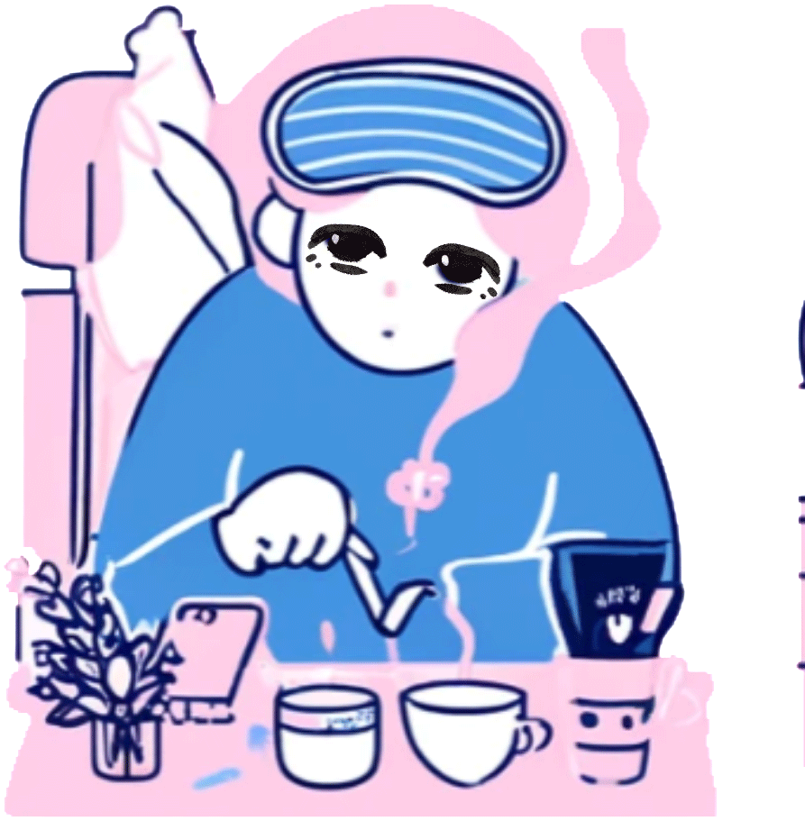
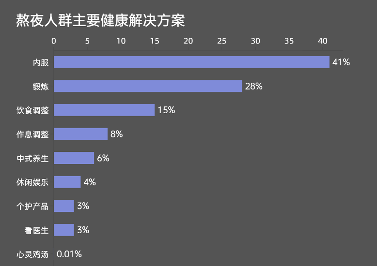

⼩南睡了吗？养养再睡吧！
我是⼩南，⼀名26岁的程序员，⼯龄35年（含加班）。产品经理⼜给我下了⼀些不太好理解的“价值”需求，我想了⼀天也不明⽩经理想要的是什么。看着办公桌上挠下来的⼏根头发，我只有叹⽓…想想同年毕业的⼩暨已经是总监级别，可以单独lead项⽬了。爸妈最近也快退休了，他们的旅游团快要报名了，这个⽉⼯资还没发，但已经产⽣⼀笔不⼩的⽀出了…想到这，愁得我顺⼿拿起桌上的万⾥⽊兰吸了⼀⼝。
叮—“00:30 褪⿊素服⽤时间到”⼿机上弹出的提醒事项提示我到了该吃褪⿊素的时间了…


熬夜养⽣，内服外调两⼿抓。他们普遍认为摄⼊类⻝物与产品的选择都对养⽣起到效果。其中，保健品成为众多内服选项之⼀，且同⽐19-20年增幅达40%。⽽且健康诉求更多元，偏重⽪肤改善、护肝、增强免疫⼒、改善疲劳、提升精⼒、改善消化问题等⽅⾯的产品。
在保养品的预算投⼊上，有33.0%熬夜晚睡年轻⼈愿意投⼊1500-3000元的费⽤，有31.5%的熬夜晚睡年轻⼈则愿意投⼊500-1500元。同时，⼤部分晚睡党相信吃出来的健康。
对于“想睡睡不好”的⼈群⽽⾔，更多⼈选择看视频听⾳乐缓解情绪困扰或改善睡眠环境。
年轻⼈的睡前⾏为呈现多样化的特点，常常在熬夜的同时⽤保健品助眠或吊住⼀⼝仙⽓。